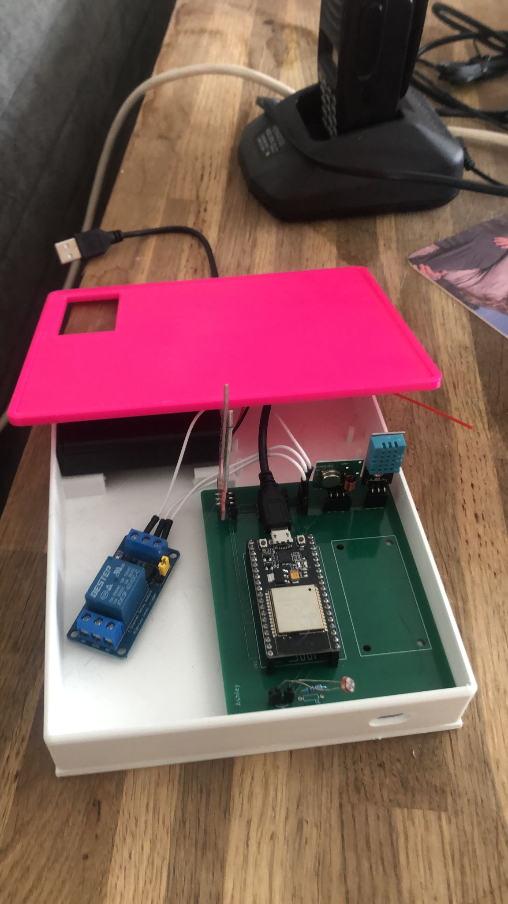

Overkoepelende opdrachten Technology en Connection
PlantenIoT schakeling
Voor technology heb ik een plantenIOT schakeling ontworpen. Ik had nog nooit eerder een opdracht uitgevoerd met een ESP32.
In het begin vond ik lastig om te begrijpen hoe draden aan elkaar verbonden moesten worden. Ik heb extra uitleg gevraagd aan klasgenoten zodat ik het snapte.
Vervolgens ben ik aa nde slag gegaan met het 3D ontwerpen. Ook dit had ik nog nooit gedaan. Zoals beschreven bij de workshop 3D technieken vind ik het ontwerpen en creatief bezig zijn leuk.
Echter omdat het de eerste keer was zijn er wel een aantal dingen die ik achteraf gezien anders had gedaan. Zo is mijn bakje niet diep genoeg en had ik de shell van de deksel ook groter moeten maken.
Ook de PCB heb ik zelf ontworpen. Dit heeft mij echt heel veel tijd gekost. Dit niet alleen omdat het programma nieuw was maar ook omdat ik geen kennis heb over printplaten en electronica.
Ook had ik achteraf bij mijn PCB andere keuzes gemaakt. Nu zitten de sensoren dicht bij elkaar en gaat de oplaadkabel over de sensoren heen. Dit is iets wat ik mij niet had realiseerd.
De kennis die ik heb opgedaan tijdens deze workshops ga ik waarschijnlijk niet nog een keer gebruiken, wat ik wel meeneem is dat het belangrijk is om tijdens de ontwerpfases verschilende iteraties te doen.
